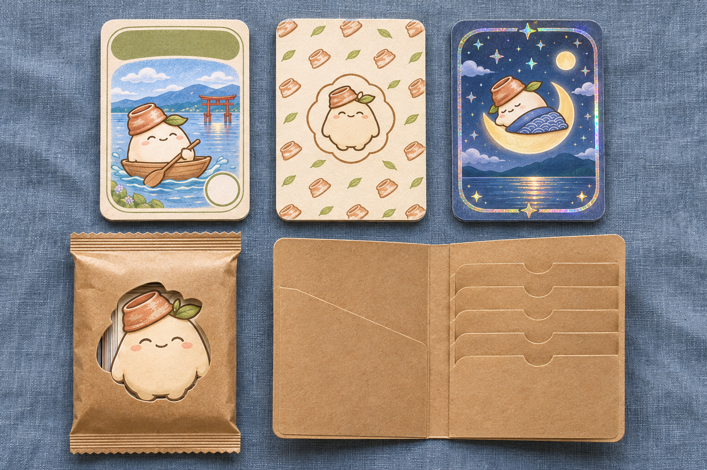
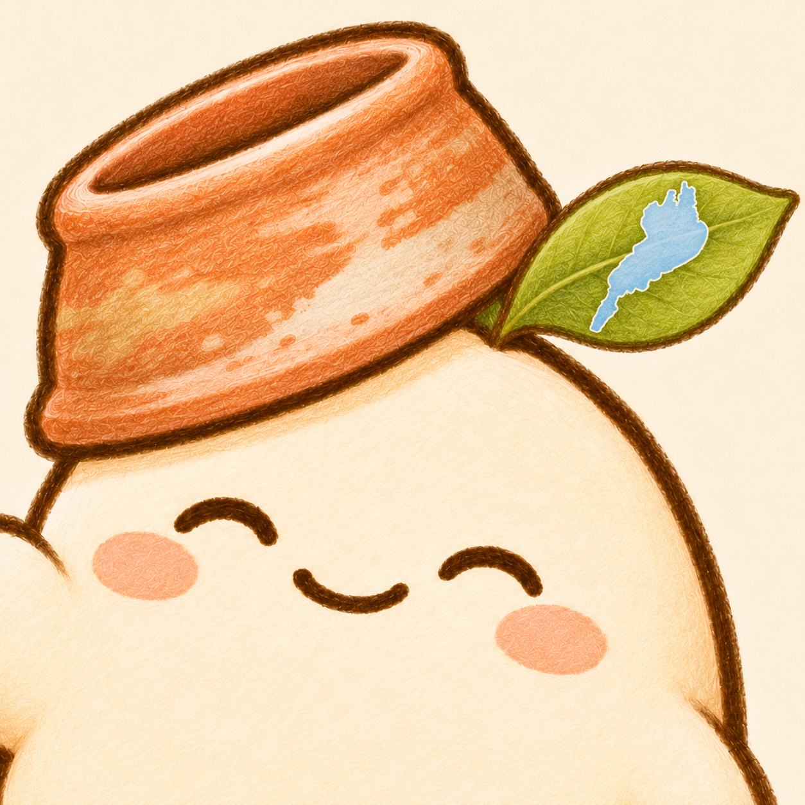

観光 × プロダクトパビリオン
DAY2 最終準備 結果ビューア
11月27日（金）のアインズ様 本社・工場見学およびデザイナー様との検討に向けて整理した日本語総合ダッシュボードです。 流行グッズ8種調査（R1）、キャラクター「おちょころ」と過去編小説（R2）、主力2品と3段階ロードマップ（R3）、口頭ブリーフィング原稿（R5）・確認質問10選（R6）を一画面で閲覧できます。
R1. 2025–2026 流行グッズ8種調査 ＆ アインズ様製造適性
アクリルやぬいぐるみのように外注比率が高くなりやすい品目に加えて、アインズ本社・工場の特殊印刷・パッケージ設備で直接製造しやすい上位3種（TOP 3）を抽出しました。行をクリックすると適用例・一次情報リンク・加工ポイントを確認できます。
| 区分 | グッズ形態 | 価格帯 | 人気根拠の要約（2025–2026） | アインズ製造適性 |
|---|
R2. オリジナルキャラクター試案3種（非重複検証済み）
既存の滋賀・近畿圏キャラクター16種を事前調査し、重複（例：近江八幡「赤コン君」、大阪府警「かもすけ」）を回避した3案です。画像クリックで拡大できます。
既存 滋賀・近畿圏キャラクター16種 重複事前確認リスト
検索欄に地域・名称・モチーフを入力すると回避根拠をすぐ確認できます。
R2. キャラクター「おちょころ」 — 滋賀で、ひと息。
信楽焼の小さなおちょこから生まれた器の精霊「おちょころ」の基本造形を固定したまま、滋賀各地の名産品や穏やかなアースカラーの物語で展開するキャラクター企画です。
おちょころ 最終デザインシート2種
基本形（丸い胴体＋傾いた信楽焼のおちょこ帽＋朝宮茶の葉）を最終案として採用します。画像をクリックすると原寸で開きます。

おちょころ ものがたり（過去編・全3話）＆ Instagram・LINE試作
信楽の窯元から捨てられカラスに攫われてびわ湖へ落ち、元の主人に祟ろうと付喪神（つくもがみ）として目覚めた器が、病を抱えた朝宮の茶農家に「茶葉の鉢」として拾われたことで怨念がほどけ、心優しい精霊へ生まれ変わる全3話の小説と現代編試作です。

千年陶芸「器（うつわ）」の精霊
甲賀・信楽の窯で焼かれた小さなおちょこから生まれた精霊。伝統工芸の現代的表現として、「器だからこそ、滋賀の食・茶・夜をすべて包み込む」物語を持ちます。
本体は変えず、両手の小物のみ展開
丸いアイボリーの体・斜めのおちょこ帽・近江茶の葉は1pxも変えず固定したまま、手に持つ名産小物（近江茶・近江牛・サラダパン・鳥居・ガラス風鈴など）だけを差し替えて県内13市へ拡張できます。
20–40代が手帳やマグに添えたくなる配色
原色を避けた淡色5カラーパレット（クリーム・テラコッタ・抹茶・ベージュ・金箔）と穏やかな語尾（〜ころ）により、手帳・タンブラー・カフェの記録写真に自然と溶け込みます。
本体固定 × 滋賀名物8種マッピング
R3. おちょころ 主力2品 — 周遊トレカ × ギフトボックス
キャラクター・グッズ販売の市場根拠（文書16番）に基づき、企画を主力2品へ集約しました。ギフト箱で最初の1枚を手に取り → 現地周遊で集め → 夜の限定カードで宿泊へつなげる設計です。

拡張10種から第1弾10枚を展開。主要拠点でノーマルカード、第2スポットでエリアカード、18時以降の宿泊・温泉利用時にコールドフォイル仕様のナイトレアを配布します（63×88mm）。初期は現場配布・ギフト箱封入で認知を広げ、ファン定着後に5枚入り350円の販売パック（ひこにゃんトレカ水準）へ展開します。

共通の外箱＋和菓子・茶事業者ごとの帯差し替えにより小ロット連携を可能にします。蓋裏に滋賀7圏域マップ、底面に組み立て式ペーパースタンド・しおりカード・トレカ1枚を封入。約200×140×50mmの貼箱・トムソン構造、非塗工板紙・箔枠・窓フィルム不使用で、中身込み1,500〜2,500円を想定しています。
紙印刷の先へ広がる展開 — 3段階ロードマップ
新しいキャラクターは、最初から「キャラクター目当て」で選ばれるわけではありません。まずは「その土地へ行く理由・手に取る理由」を商品に込め、認知を低コストで育てたうえで立体展開へ進みます。
· トレカ：まず現場配布と箱封入で流通（マンホールカード累計約290万枚、ダムカード来訪者の62%が県外）
· ステッカー：385〜550円のダイカットシールを少量制作し箱へ封入
· 本格信楽焼おちょこ：キャラクターの帽子を実物陶器で再現し、地元窯元と協業（信楽焼トトロ等の先例あり）
· 銘菓ギフトボックス：くまモン関連売上の89%は食品が牽引
· トレカ販売パック：認知定着後に展開（ひこにゃんも20年の人気蓄積が基盤）
· 宿泊コラボレーション：客室・アメニティ連携（ミャクミャクルーム等の先例）で宿泊率7.8%の課題に直結
根拠：17番調査ドキュメント ／ 文具商材の展開可否整理（事前調査レポート）
ブランドポジショニング · 想定質問 · パートナー
一般的なキャラクター雑貨棚で知名度を競う発想から離れ、「地域みやげ・工芸棚」で確実に選ばれる立ち位置を採ります。根拠文書：18（ブランドガイドライン）・19（キャンペーン計画）・20（ポジショニング・心理・協業）
② もう一か所、もう一泊：日帰り92.2%を周遊と宿泊へつなぐ
③ 本物でつくる：信楽焼・近江茶・滋賀銘菓・滋賀印刷の共演
④ 現地で出会える仕組み：配布カード・分散ガチャ・ナイトレア
先例： ひこにゃんは兜一つで彦根を象徴し、おちょころはぐい呑みの帽子で信楽を示します。
拡張： 湖・城・地酒・ビワイチはバリエーション10種と箱の内側地図で補完。
補強案（試作済み）： 頭上の茶葉シルエットの中に実測地図のびわ湖ラインを織り込む意匠も用意しています。

2. 滋賀の老舗和菓子・茶事業者1社（共通箱＋帯差し替え）
3. カプセルトイ運営会社（分散設置）
4. 県内宿泊施設1拠点（ナイトレアカード配布）
5. 信楽の窯元（実物ぐい呑み制作）
協業先の利点：「2枚目のカード配布場所」になることで来訪者が自発的に立ち寄ります。
集めたくなる心理設計： 最初の1枚は無償入手 → 空欄の見える10ポケットホルダー → 旅の最後に宿泊先で最も華やかなナイトレアを獲得 → 箱の中のペーパースタンドは自分で組み立てて愛着が生まれます。希少性は誠実な限定性に留め、急かす表現は使いません。
キャラクター × プロダクト組み合わせシミュレーター（12パターン）
デザイナー様との打ち合わせで「どのビジュアル主体とどのグッズ形態を組み合わせるか」を議論する際、ターゲット・印刷工程・2027年滋賀DC連携・提案ポイントを即座に確認できます。
STEP 1 · ビジュアル主体を選択 (R2)
STEP 2 · プロダクト形態を選択 (R3)
R5 日本語発表原稿 ＆ R6 アインズ様確認質問10選
デザイナー様・工場ご担当者の前でそのまま読み上げ・コピーできる日本語ブリーフィング原稿と、ご回答に応じて DAY3（12/11）・DAY4（12/18）の企画をどう具体化するかを整理した質問リストです。
R5. デザイナー様向け 2〜3分 口頭ブリーフィング原稿
A4 1枚要約PDF または 10枚シンプル版プレゼン資料を表示しながら、以下の順でお話しいただけます。
【導入・方向性（約30秒）】
本日は貴重なお時間をいただきありがとうございます。私たちの観光×プロダクトパビリオンチームでは、アインズ様のアンケートにある『滋賀＝水は91.6%と強いが、食や観光が印象に残りにくい』というギャップと、県の統計にある『日帰り客が約92%で滞在・周遊が課題』という点に着目しました。そこで、見て終わるパンフレットを超えて、『持ち帰りたくなる・集めたくなる・SNSに載せたくなる』、しかもアインズ様の印刷・パッケージ技術そのものが価値になるグッズを3パターン検討してきました。
【市場調査TOP3・キャラクター（約1分）】
まず、2025〜2026年の流行グッズを8種類調査したところ、ぬいぐるみやアクリルは外注になりやすい一方、①特殊加工デコシール＆シール帳、②ご当地トレーディングカード、③リユース可能なデザインパッケージの3つは、紙と印刷加工で形にしやすいと考えました。貴社でどこまで対応いただけるか、ぜひ伺いたいです。キャラクターは、既存のひこにゃんや赤コン君等と被らないよう調査した上で、信楽焼のおちょこと近江茶の『おちょころ』を考え、基本形と展開10種まで描いてきました。
【プロダクト案・ご相談（約1分）】
具体的な企画としては、①周遊トレカ『びわコレ』、②Z世代のシール帳ブームを狙う『しがデコ！』、③既存名産品を高付加価値化し紙製スタンドが付くリユース箱『滋賀の宝箱』の3案を用意しています。本日の工場見学とディスカッションでは、『貴社で作りやすく、12月18日の発表までに形にできそうな仕様はどれか』『おちょころをどのグッズでどう活かすか』について率直なご意見をいただきたいです。
- 課題定義： 水91.6%への偏りと日帰り92.2%の課題を「手元に残る印刷グッズ」で解決する。
- 現実性の担保： 外注型（アクリル・縫製）に先立ち、紙と印刷加工で内製しやすい TOP 3 を軸に設備適性を伺う。
- キャラクター： 既存16種と重ならない おちょころ 一本に集約。本体固定・小物差替で県内各地へ拡張可能。
- 本日決めたいこと： 12/18最終発表までに仕上げる主力仕様と試作範囲をご相談する。
日程・移動タイムライン ＆ 出発前チェックリスト
チェック状態はお使いのブラウザ（localStorage）に自動保存されます。チーム事前連絡ボタンから確認用メッセージをワンクリックでコピーできます。
11/27(金) BKC → JR野洲駅 移動タイムライン
本社・工場：滋賀県蒲生郡竜王町鏡2291番地3（野洲駅集合後、送迎移動）
チーム内 事前確認メッセージ（提出方法・役割・連絡事項）
事前アップロード要否、メンバー間の役割分担、集合案内変更の有無を確認する際の定型文です。